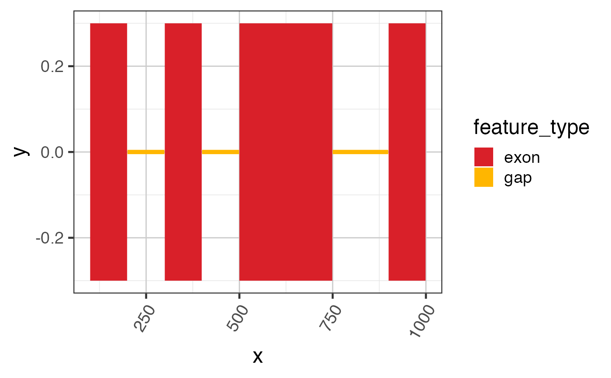

Sample exon data GRanges
test_exon_gr
GRanges object where each segment represents one
exon for an arbitrary gene. It has one column of values,
"gene_name" used for Sashimi plot preparation.
This dataset contains RNA-seq splice junction data stored as a GRangesList.
Other splicejam data:
test_cov_gr,
test_cov_wide_gr,
test_exon_wide_gr,
test_junc_gr,
test_junc_wide_gr
# The code below is used to create the exon test data suppressPackageStartupMessages(library(GenomicRanges)); suppressPackageStartupMessages(library(ggplot2)); test_exon_gr <- GRanges(seqnames=rep("chr1", 4), ranges=IRanges::IRanges( start=c(100, 300, 500, 900), end=c(199, 399, 749, 999)), strand=rep("+", 4), gene_name=rep("TestGene1", 4)); names(test_exon_gr) <- jamba::makeNames(rep("exon", length(test_exon_gr)), suffix=""); # To plot a simple GRanges object ggplot(grl2df(test_exon_gr), aes(x=x, y=y, group=id, fill=feature_type)) + geom_polygon() + colorjam::theme_jam() + colorjam::scale_fill_jam()#> Warning: failed to set names on the unlisted CompressedRleList object